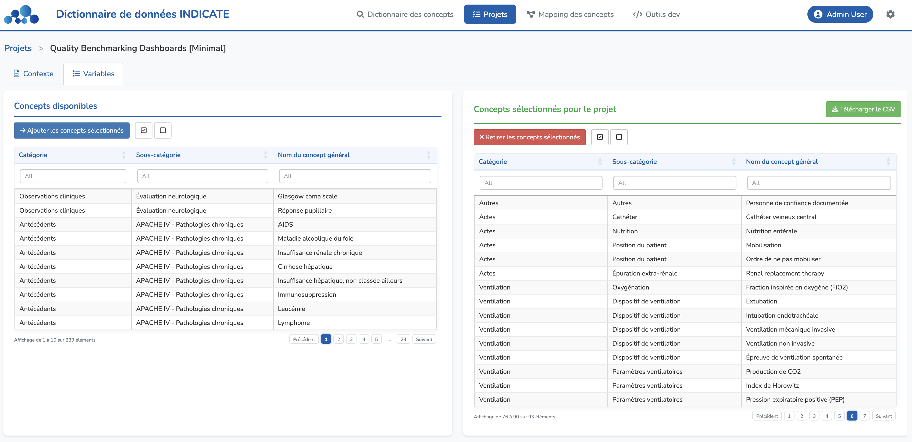

Projets
Le module Projets vous permet de définir et de gérer des projets scientifiques qui utiliseront les données de votre base de données. Un projet peut être une étude de machine learning, une analyse statistique classique, un tableau de bord de pilotage, ou toute autre initiative exploitant des données.
Pour chaque projet, vous spécifiez quels concepts généraux sont nécessaires, ce qui vous permet de suivre les besoins en données et de vous assurer que votre collecte de données soutient vos objectifs de recherche.

Liste des projets
La page principale des Projets affiche tous les projets définis dans un tableau avec les colonnes suivantes :
- Nom du projet — le nom du projet
- Description courte — une brève description de l'objectif du projet
- Actions — éditer ou supprimer le projet
Créer un projet
Cliquez sur le bouton Ajouter un projet pour créer un nouveau projet. Vous devrez fournir :
- Nom du projet — un nom descriptif pour votre projet
- Description courte — un bref résumé de ce que le projet vise à accomplir
Gérer les projets
Depuis la colonne Actions, vous pouvez :
- Éditer — modifier le nom et la description du projet
- Supprimer — retirer le projet du système
Ouvrir un projet
Double-cliquez sur n'importe quelle ligne de projet pour ouvrir la vue détaillée du projet. Cela ouvre une page dédiée où vous pouvez configurer les exigences et la documentation du projet.
Vue détaillée d'un projet
Lorsque vous ouvrez un projet, vous verrez deux onglets :
1. Onglet Contexte
Cet onglet fournit un espace pour la documentation du projet :
- Justification scientifique — décrivez la justification scientifique du projet, les questions de recherche et les résultats attendus
- Bibliographie — listez la littérature pertinente et les références qui informent le projet
Cette documentation aide les membres de l'équipe à comprendre le contexte du projet et assure une interprétation cohérente des besoins en données.
La page de détails du projet sera progressivement enrichie avec des champs supplémentaires tels que les critères d'inclusion/exclusion, les caractéristiques de la population étudiée, et la possibilité d'ajouter des champs personnalisés pour capturer des informations spécifiques au projet.
2. Onglet Variables
Cet onglet vous permet de spécifier quels concepts généraux sont nécessaires pour votre projet. L'interface est divisée en deux panneaux :
Concepts disponibles (panneau de gauche)
Affiche tous les concepts généraux du dictionnaire INDICATE. Vous pouvez :
- Sélectionner des concepts — cliquez sur des lignes individuelles pour les sélectionner
- Tout sélectionner / Tout désélectionner — utilisez les boutons au-dessus du tableau pour sélectionner ou désélectionner rapidement tous les concepts
- Ajouter les concepts sélectionnés — cliquez sur le bouton Ajouter les concepts sélectionnés pour déplacer les concepts sélectionnés vers les exigences du projet
Concepts sélectionnés pour le projet (panneau de droite)
Affiche les concepts généraux qui ont été assignés à ce projet. Vous pouvez :
- Sélectionner des concepts — cliquez sur des lignes individuelles pour les sélectionner
- Tout sélectionner / Tout désélectionner — utilisez les boutons au-dessus du tableau pour sélectionner ou désélectionner rapidement tous les concepts
- Retirer les concepts sélectionnés — cliquez sur le bouton Retirer les concepts sélectionnés pour retirer les concepts des exigences du projet
Utiliser les exigences du projet
Définir les exigences d'un projet répond à deux perspectives clés :
- Pour les créateurs de projet — identifier quels fournisseurs de données peuvent participer au projet en fonction de la disponibilité des concepts requis dans leurs bases de données
- Pour les fournisseurs de données — découvrir à quels projets ils peuvent contribuer en fonction des concepts disponibles dans leurs données
Lors de la définition des exigences d'un projet, incluez tous les concepts généraux qui seront utilisés dans votre analyse, même s'ils ne sont nécessaires que pour l'ajustement ou la stratification. Cela garantit une collecte de données complète dès le départ.